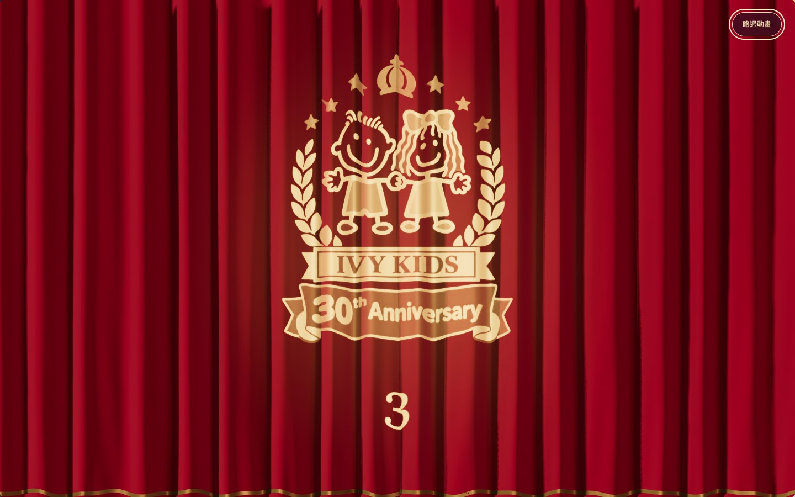
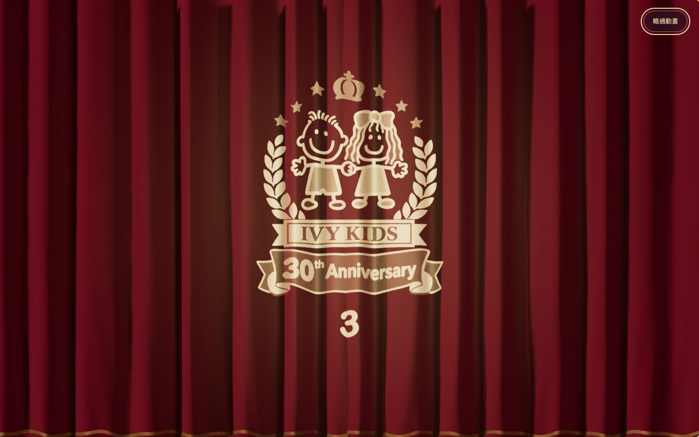
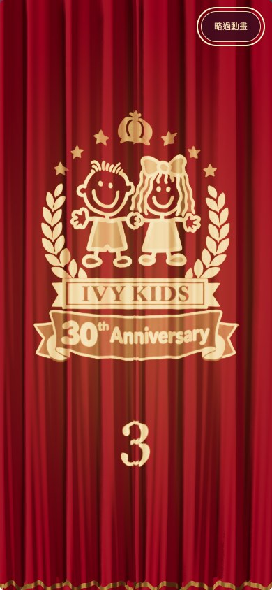
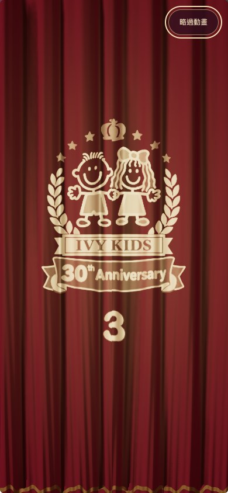

A 經典對開・協調性精修
播放精修版動畫 →
讓金光與紅絨，各自有位置。
收斂紅色亮度、拉近校徽與倒數、統一圓潤字形。保留原來的校徽與完整 3、2、1 開幕。




以上為本機 Nuxt 首頁的實際瀏覽器截圖，可點開看原尺寸；動態請按「播放精修版動畫」。
收斂紅色亮度、拉近校徽與倒數、統一圓潤字形。保留原來的校徽與完整 3、2、1 開幕。




以上為本機 Nuxt 首頁的實際瀏覽器截圖，可點開看原尺寸；動態請按「播放精修版動畫」。